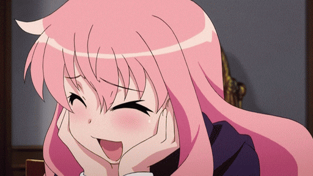
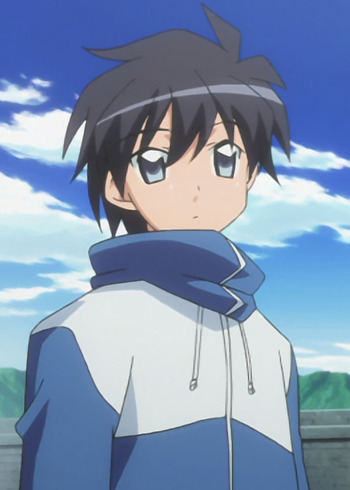

Klasik isekai yang mempopulerkan genre tsundere
Zero no Tsukaima mengisahkan tentang Saito Hiraga, seorang siswa SMA biasa yang tiba-tiba dipanggil ke dunia sihir oleh Louise, seorang penyihir muda yang dijuluki "Louise the Zero" karena kegagalannya dalam sihir. Saito menjadi familiar Louise dan terlibat dalam berbagai petualangan di akademi sihir.

Penyihir muda yang memanggil Saito sebagai familiar. Dijuluki "Zero" karena sering gagal dalam sihir.

Protagonis yang dipanggil dari Jepang ke dunia sihir. Memiliki kemampuan khusus sebagai familiar Louise.